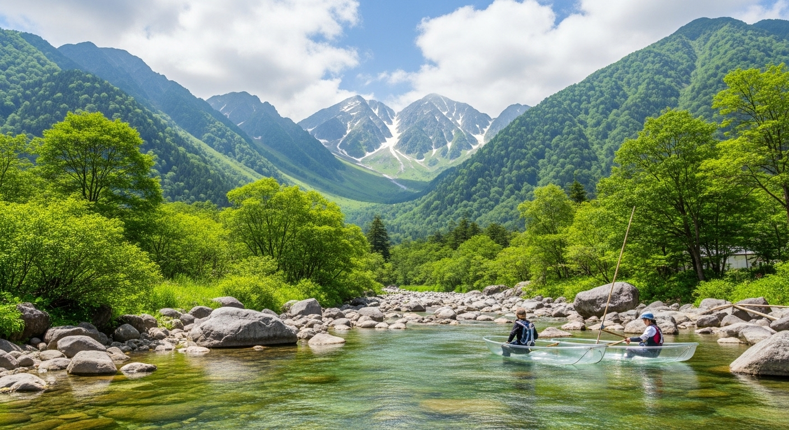

「暑さから逃れたい」「心からリフレッシュしたい」という方に、自信をもっておすすめするのがこのエリアです。標高1500mの上高地は、真夏でも平均気温が20℃前後と涼しく、別世界が広がっています。
【ポイント】
| 日程 | プラン |
|---|---|
| 1日目 | 松本・安曇野へ ・午後：松本駅到着後、国宝・松本城を見学。 ・夕方：安曇野へ移動し、早めに宿にチェックイン。地元の食材を使った夕食を楽しむ。 |
| 2日目 | 天空の楽園・上高地 ・午前：沢渡（さわんど）駐車場からシャトルバスで上高地へ。 ・終日：大正池で下車し、焼岳を望みながら河童橋までハイキング。河童橋周辺で昼食。 ・午後：体力に合わせて明神池まで散策。梓川の清流で涼む。 ・夕方：バスで下山し、宿へ。 |
| 3日目 | 水の郷・安曇野を満喫 ・午前：大王わさび農場でクリアボート体験と、本わさび丼の朝食。 ・昼：レンタサイクルで安曇野アートラインの美術館やカフェを巡る。 ・午後：松本駅へ移動し、お土産を購入して帰路へ。 |